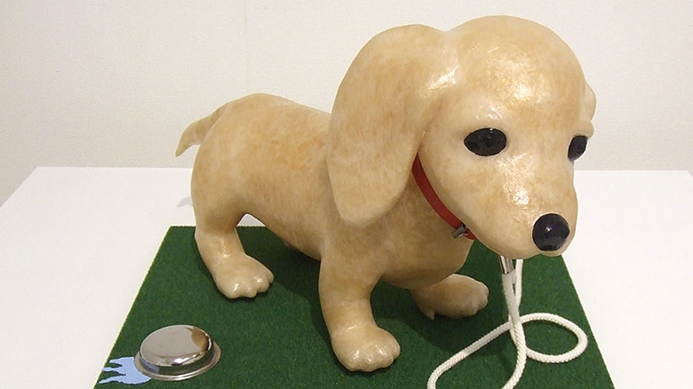

idea

瀬畑亮
https://www.ryo-sehata.com/-どんな人
セロハンテープをひたすら巻きつけてくっつけて彫刻作品をつくるアーティストです。セロテープの登録商標を保有するニチバン株式会社がスポンサー契約していてセロテープいっぱいもってます。
-解説
作り方を説明している動画がありました。 https://www.youtube.com/watch?v=PlqyurKy_oE セロテープを伸ばしてくしゃくしゃに丸めながら塊をつくり、塊同士をまたセロテープでくっつけ、また塊同士をセロテープでくっつけ…といった繰り返しをひたすら行う、思った以上に根気のいる作業のようです。
-好きなところ
セロテープまるめて固めていくとやや黄色ががったテカテカとした質感が表れてとても面白いです。セロテープを丸めて固めてくっつけて彫刻をつくるという発想がすきです。